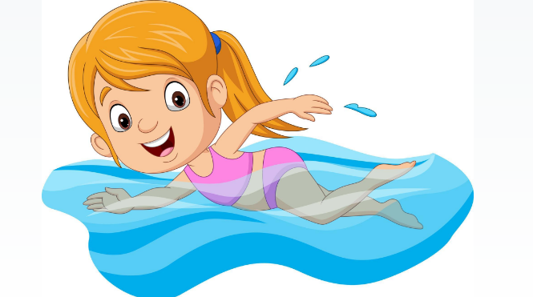
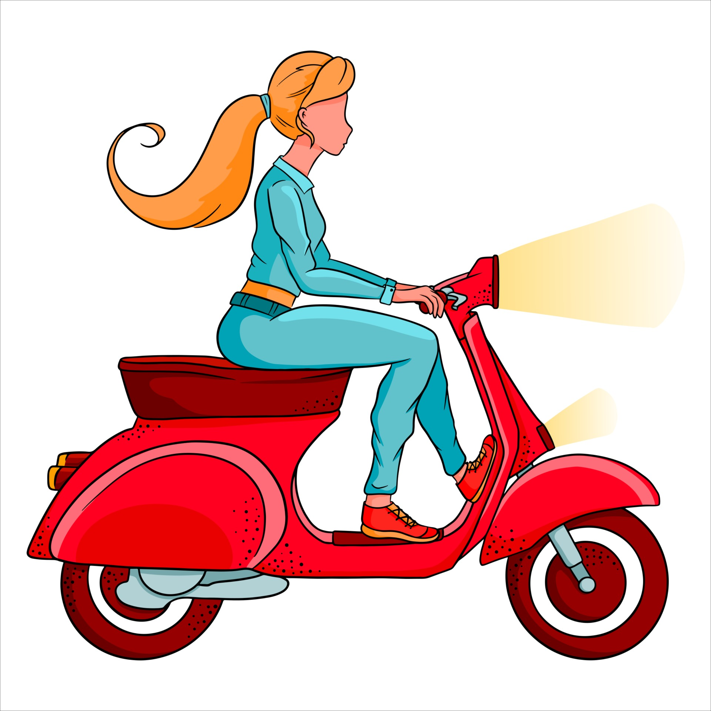
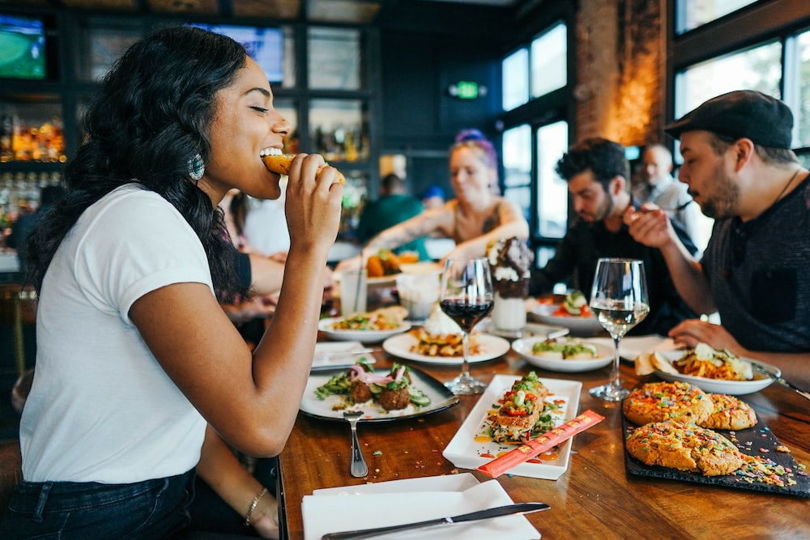

ABOUT ME
DANICA ROSE DE MESA BANAAG
I am Danica Rose Banaag 20 years old from Talumpok West Batangas City
I am the youngest of five siblings and we are all girls. My father is a farmer while my mother is a food vendor. And that is our business to make and sell Kalamay and Suman especially for weddings. Our parents started a very good business because it helped us with our studies and all our daily expenses. and this is the reason why we were able to build our home. It's not to brag, but my sister and I always help in cooking Kalamay, which should be men's work. I'm not ashamed that that's how I grew up because it helps me more because I learn to be more appreciative of anything.
And also I also experienced selling vegetables in our barangay since elementary school because this was the first thing that our parents made us aware of because not all people are lucky enough to be born rich and whatever they want they get immediately. It's not like us who have to get tired before buying the need. And in those experiences with our parents I am not ashamed to tell them so you can get to know me better. I told this story because I am happy to see that our life has really changed and I am proud of it.
HOBBIES



MY FAVORITES
WATCHING AROUND THE SEA
Ive always loved how the ocean makes me feel, and so I spent some time looking at the science behind why this might be. Living around the ocean or seeing views of natural beauty increases your desire to be outside and take part in activities such as running, cycling or team sports. Of course, swimming is also much more common around beaches. Aerobic activities like these keep your respiratory system working well and are known to increase life expectancy.
SPENDING TIME WITH FAMILY / FRIENDS
When we spend time with family especially face-to-face communication, as opposed to digital it significantly reduces the occurrence of depression, anxiety, and other mental illness. Being physically present with loved ones creates a strong emotional support to buoy you up through lifes challenges.